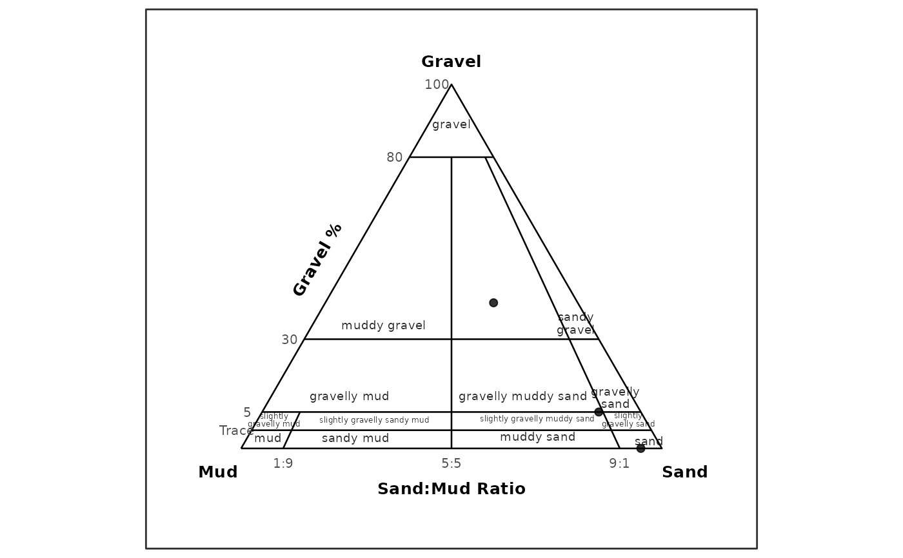
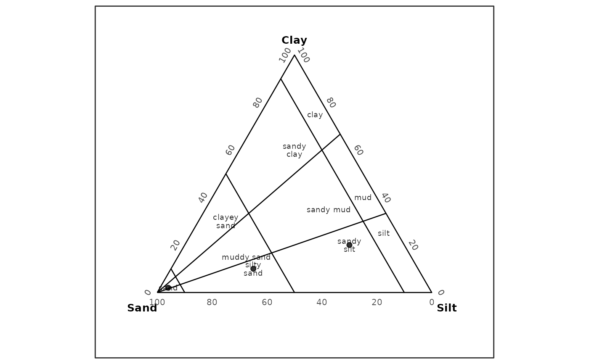

plot_texture_ternary() is the preferred texture ternary plotting function.
plot_texture_triangle() is a compatibility alias with equivalent behavior.
Both functions plot summarized ternary component percentages and optional
user-supplied texture polygons. A fraction scheme is the rule used by
gs_fractions() to convert size-bin data into components, a ternary basis
is the three-component set drawn on the diagram, and a texture system is the
classification or diagram style selected by scheme.
The package draws the ternary diagram with ggplot2 and does not depend on
external ternary plotting packages.
Usage
plot_texture_ternary(
x,
scheme = "gradistat",
components = NULL,
normalize = "none",
sample_id = NULL,
labels = FALSE,
polygons = NULL,
show_polygons = TRUE,
show_polygon_labels = TRUE,
polygon_alpha = 0.15,
classify = FALSE,
basis = c("gravel_sand_mud", "sand_silt_clay_no_gravel"),
point_id = NULL,
show_boundaries = TRUE,
show_classes = TRUE,
show_class_labels = show_classes,
show_sample_labels = labels,
sample_label_size = 3,
class_label_size = 2.5,
point_size = 1.8,
point_color = "black",
point_alpha = 0.8,
color_by = NULL,
label_style = c("inside", "callout", "none")
)Arguments
- x
A valid
gsd_tblobject.- scheme
Texture ternary plotting system. Use
"gradistat"for GRADISTAT ternary diagrams or"usda"for USDA major-class ternary diagrams. Legacy raw-gsd_tblschemes such as"isss"and"uk_ssew"remain available throughplot_trigon().- components
Optional character vector of three component names in left, right, top order.
- normalize
Normalization mode passed to
gs_fractions_wide().- sample_id
Optional character vector of sample identifiers to include.
- labels
Should sample labels be drawn?
- polygons
Optional user-supplied texture polygon data.
- show_polygons
Should supplied polygons be drawn?
- show_polygon_labels
Should polygon class labels be drawn?
- polygon_alpha
Fill alpha for polygon overlays.
- classify
Should sample points be classified with
classify_texture()?- basis
GRADISTAT ternary plotting basis. Supported values are
"gravel_sand_mud"and"sand_silt_clay_no_gravel".- point_id
Optional column name used for point labels in GRADISTAT data-frame plots.
- show_boundaries
Should GRADISTAT classification boundaries be drawn?
- show_classes
Should GRADISTAT class labels be drawn?
- show_class_labels
Alias for
show_classes.- show_sample_labels
Should sample labels be drawn? Defaults to
FALSEfor texture ternary plots.- sample_label_size
Text size for sample labels.
- class_label_size
Text size for class labels.
- point_size
Sample point size.
- point_color
Constant sample point color used when
color_byisNULL.- point_alpha
Sample point alpha.
- color_by
Optional column name in the summarized ternary table used to map sample point color.
- label_style
Label style for GRADISTAT class labels.
"inside"and"callout"use the current readable label placement, and"none"suppresses them.
Details
The intended GRADISTAT workflow is to read grain-size data, compute
fractions with gs_fractions() or gs_fractions_wide(), then plot those
summarized components. For scheme = "gradistat", use
basis = "gravel_sand_mud" with gravel, sand, and mud components, or
basis = "sand_silt_clay_no_gravel" with sand, silt, and clay
components. Official gs_fractions() long output, official
gs_fractions_wide() output with *_percent columns, and canonical
summarized tables with component columns are supported. Component column
matching is case-insensitive, so Sand and SAND are treated as sand;
arbitrary spelling, punctuation, or suffix variants are not interpreted.
Raw gsd_tbl input is not plotted directly for GRADISTAT ternary diagrams.
For scheme = "usda" and data-frame inputs, the function accepts
summarized sand, silt, and clay percentage columns and draws USDA
major-class boundaries. Legacy raw-gsd_tbl plotting for older trigon
schemes remains available through plot_trigon().
Examples
gsm <- data.frame(
sample_id = c("A", "B", "C"),
gravel = c(0, 10, 40),
sand = c(95, 80, 40),
mud = c(5, 10, 20)
)
plot_texture_ternary(
gsm,
scheme = "gradistat",
basis = "gravel_sand_mud",
point_id = "sample_id"
)

ssc <- data.frame(
sample_id = c("A", "B", "C"),
sand = c(95, 60, 20),
silt = c(3, 30, 60),
clay = c(2, 10, 20)
)
plot_texture_ternary(
ssc,
scheme = "gradistat",
basis = "sand_silt_clay_no_gravel",
point_id = "sample_id"
)
